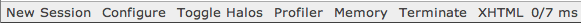
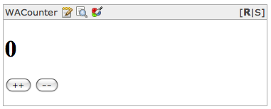

Ajax Browser Debugging Components Configuration Databases GLORP Debugging Hosting Installing Magritte Overview Pier Resources Server Testing URLs
Seaside is a web app. framework implemented in Smalltalk. The name stands for "Squeak Enterprise Aubergines Server with Integrated Development Environment". "aubergine" is a British term for "eggplant". The name is meant to poke fun at "Enterprise JavaBeans". Seaside was written by Avi Bryant and Julian Fitzell. It was inspired by Avi's Ruby-based Iowa web app. framework. Other people, including Lukas Renglli, have now taken over much of the maintainance and enhancment activities. Seaside has been ported to Ruby by Eric Hodel and goes by the name Borges.
One of the primary characteristics of Seaside is that it is a continuation-based framework. This solves many typical issues in implementing web applications such as correctly maintaining state on the server-side regardless of the use of browser back and forward buttons. Seaside maintains the entire state of the application for each page "hit". If the user uses the back button to return to a previous page, Seaside restores the state the application was in when that page was previously displayed. This can be customized on a case-by-case basis. For example, in a shopping cart application if the user has placed items in the cart, the application shouldn't behave as though the items have been removed just because the user has pressed the back button.
Unlike most other frameworks, Seaside doesn't use templating to generate HTML. Instead, page content is specified using Smalltalk code to send messages to an HTML "canvas" (see instance methods in the WAHtmlCanvas class). The Seaside philosophy is that developers should control HTML output, using lots of div tags with ids, and web designers should use CSS, referencing the ids of those divs, to make pages look nice. Common templating languages used by other web app. frameworks include JSP, ASP and Velocity. Ruby on Rails also uses this approach.
Seaside has good solutions for persistence and scaling. For persistence to a relational database, see the open source library GLORP.
Seaside applications are portable to the four main Smalltalk implementations: Squeak (open source), GNU Smalltalk (open source), Cincom VisualWorks (commercial) and GemStone/S (commercial, essentially a Smalltalk database). What about Object Arts Dolphin?
Seaside can be installed into an existing image. However, it's much easier to download an image that already contains it. Two such options are the "Seaside One-Click Experience" and squeak-dev images from Damien Cassou.
To install Seaside into an existing image ...
To determine the version that is currently installed, open a Monticello Browser and locate "Seaside2" in the left pane. The version number will appear in parentheses after the name.
Classes in Seaside have a prefix of "WA" to distinguish them from other classes. This stands for "Web Application".
The HTTP server most commonly used with Seaside is KomHttpServer. To determine whether an instances of this are already running, enter the following in a Workspace and explore-it (ctrl-I):
HttpService allInstances
To start a new instance, enter the following in a Workspace and do-it:
WAKom startOn: 8080
When an instance is running, the explore-it above should display the following:

After doing this, if you save the image, the server will restart automatically each time the image is reopened.
To stop the running instance, enter the following in a Workspace and do-it:
WAKom stop
The main Seaside page, called the "Dispatcher Viewer", in this server is at http://localhost:8080/seaside/.
Seaside URLs have two query parameters. The first is named "_s". This is a session identifier that is the same for all pages browsed in the current session. The second is named "_k". This is request key that is used by Seaside to track the progress of the user within a web application. Each link and form field (which includes buttons) is given a unique request key value.
Components represent whole pages or portions of pages.
They inherit from the WAComponent class.
Components can maintain state such as the current values of form fields.
When a component is ready to be rendered, it enters a response loop that:
Here are the steps to develop a simple "hello world" web application.
HelloComponent
that inherits from WAComponent.canBeRoot class method
that simply returns true.renderContentOn: instance method
that takes a parameter named "html"
and contains the following message send:html text: 'Hello World!'html is a WARenderCanvas object
which inherits from WAHtmlCanvas.
An
Changes that are made to the code within Squeak and saved can be seen in the browser by simply presssing the browser refresh button.
Seaside web applications can be debugged
in the browser where they are running.
When not run in "deployment mode", a toolbar at the bottom
of the browser window provides the options shown below.

Clicking "Toggle Halos" adds options for debugging as shown below:

The pencil button opens a web-based System Browser than can be used to browse and modify the code of the web application. This modifies code in the running Squeak images, just as if the changes had been made in the Squeak environment. When finished using it, click the "x" in the upper-right corner to return to the web application.
The magnifying glass button opens an Inspector on the current Seaside component. This is used to examine the values of instance variables. It also provides a text window where Smalltalk expressions can be entered. The "do it" and "inspect it" buttons operate on that text.
The paint brush button is a CSS editor.
"[R|S]" appears in the upper-right corner. Clicking the "R" renders the current component. Clicking the "S" shows the HTML source of the current component.
Just like in the Squeak environment, when an error occurs in a Seaside application that is running in development mode, a live stack trace is displayed. Clicking a link in the web-based stack trace runs the debugger in the Squeak environment. Code and variables can be examined and modified. The code that caused the error can be rerun without starting the applicatio from scratch.
In addition to SUnit, the standard Smalltalk testing tool, SeasideTesting can be used to test Seaside applications. This includes testing various form inputs and button/link clicks.
To configure the current web application, click the "Configure" link at the bottom.
To turn deployment mode on, click the "override" link for "Deployment Mode", and change the value in the newly displayed drop-down list to "true".
To prevent the user from being presented with a stack trace when an error occurs, change the "Error Handler" from "WAWalkbackErrorHandler" to another error handler. Custom error handlers can be created.
To control the number of continuation frames that are retained,
change "Session Expiry Seconds".
In code, the isolate message can be used to purge
all previous continuation frames.
Ajax-style web interfaces are supported through integration with Scriptaculous, YUI and other Ajax libraries.
The most popular object-relational mapping (ORM) tool for Smalltalk is GLORP. This stands for "Generic Lightweight Object-Relational Persistence". It is the Smalltalk equivalent of the Ruby on Rails ActiveRecord library. GLORP works with any database for wich a driver has been written. Squeak only has a driver for Postgres. VisualWorks has more.
Cincom ActiveRecord is like Ruby on Rails ActiveRecord.
ImageSegment is an open source library for Squeak that serializes a collection objects into a form that can written to a file and reconstituted later.
Magma is an open source, multi-user, object-oriented database for Squeak. It watches a collection of objects and serializes them when they change. It supports transactions.
GemStone/S is like an enterprise version of Magma.
http://www.seasidehosting.st provides free hosting for non-commercial Seaside applications. It does not serve files or provide access to a database.
Magritte generates Seaside-based HTML "views, reports, validating editors and persistency mechanisms" for data and constraints described by it. This similar to Rails scaffolding.
Pier is a content management system that is built on Seaside. It was primarily developed by Lukas Renggli. The content of a Pier site is managed in a web browser. Any Seaside application can serve as a Pier widget. It can be used to build web-based iPhone applications.
To begin using Pier, download it, unzip it, run the application, and browse http://localhost:8080/seaside/pier. The application is a Squeak image and opens like any other Squeak image.
A summary of Pier terminology follows:
They are created using a wiki-like syntax that is documented here.
Copyright © 2007 Object Computing, Inc. All rights reserved.